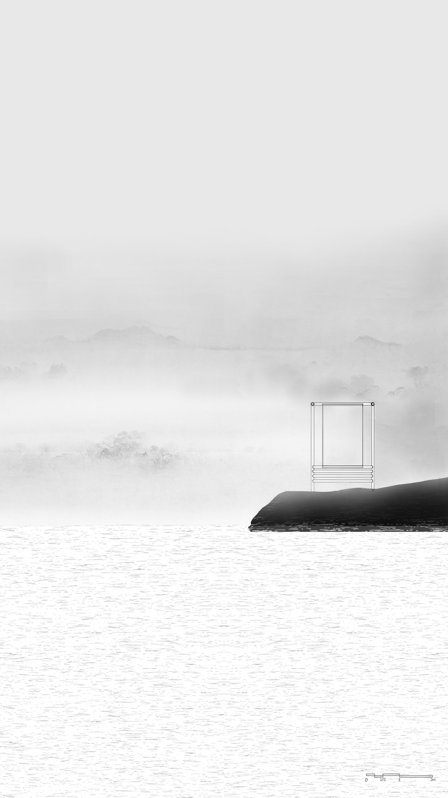
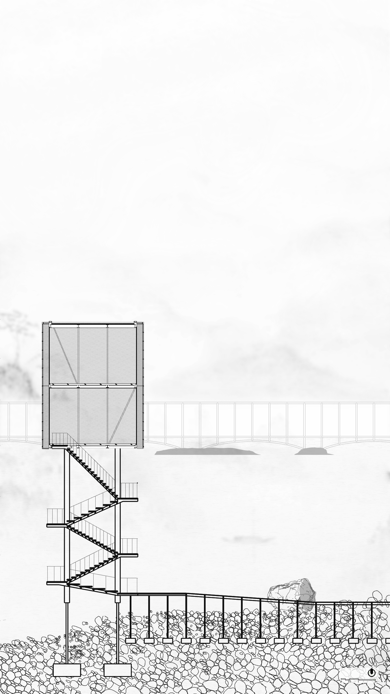
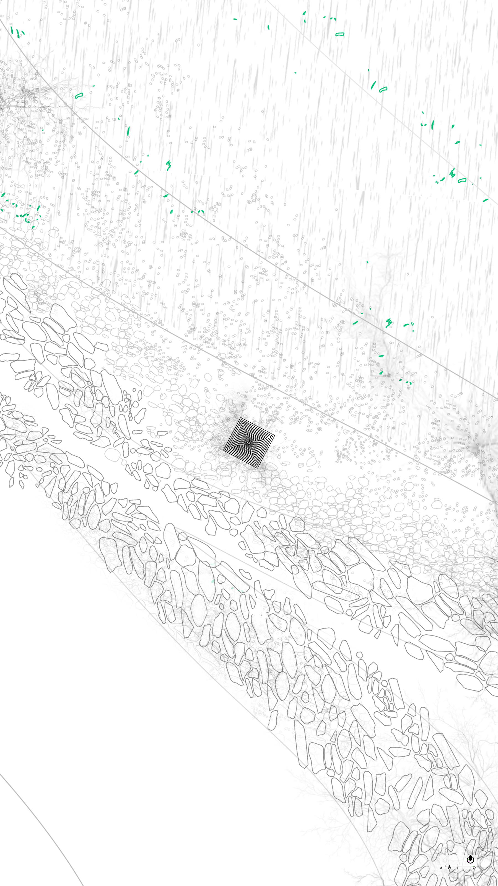
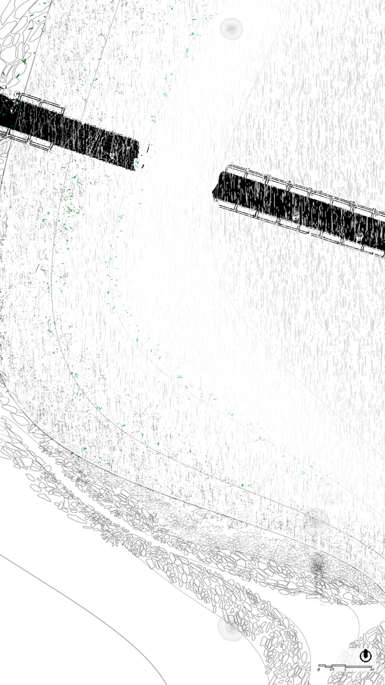
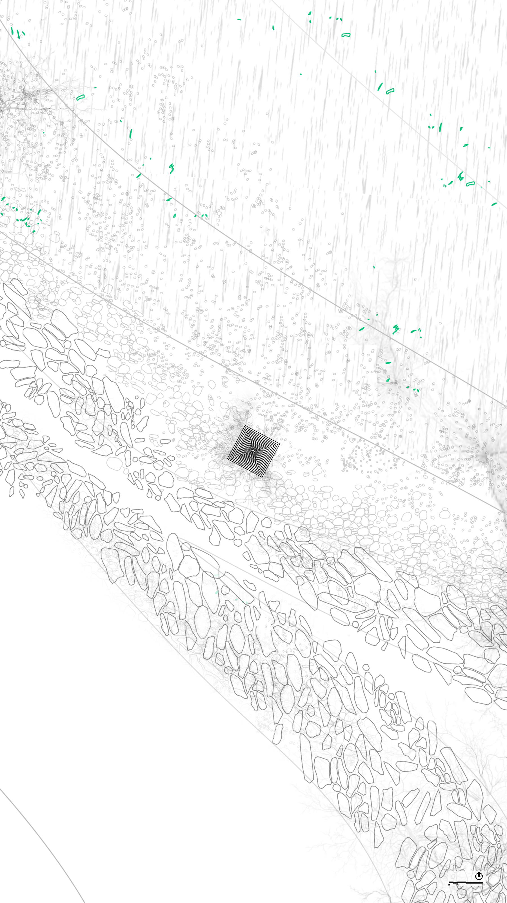
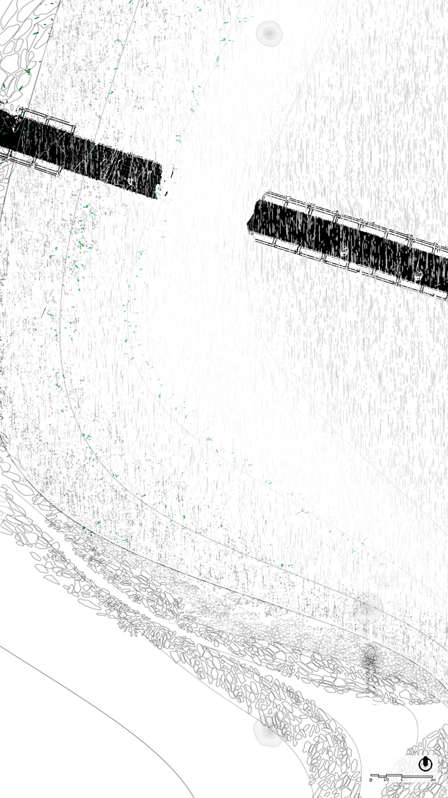
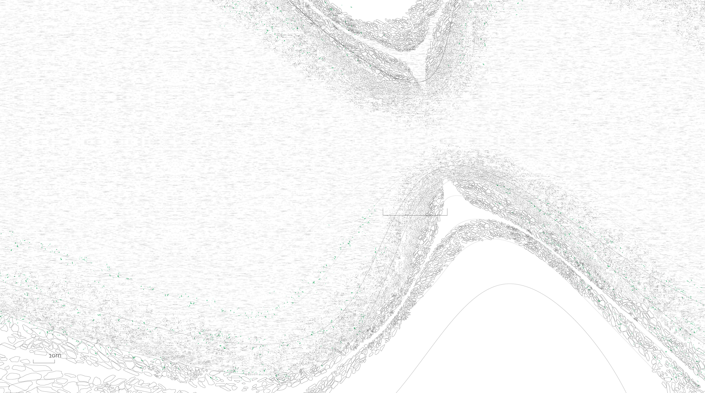
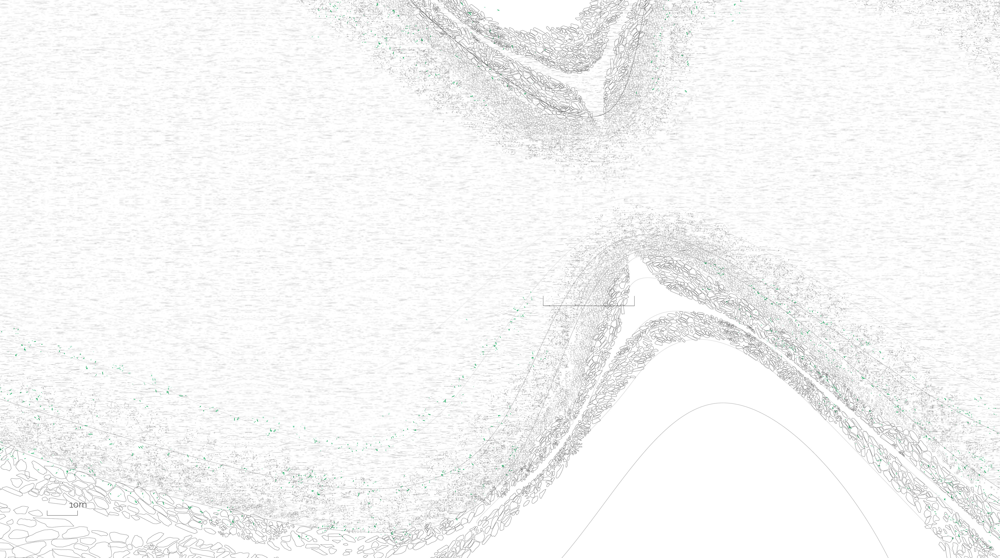

How Storytelling can Alter the Climate Reality




 



 


This collection of designs is meant to be viewed from right to left. Scroll right to view more.
The historic White Crane Ridge chronicles the embodiment of the Chinese philosophical comprehension that shared, shifting perspectives pervade all living entities. Our proposal seeks to decode these perspectives via the design and recognition of a landscape marked by bioindicators. We aim to consider the wisdom of phenological rhythms and the myriad life forms that contribute to them as a spectrum of signals detectable by human senses.
An expansive network of hydrological monitoring devices would serve as our observatory, tracking the changing habits of the diverse species living at different water levels, reflective of the Yangtze's annual 10-meter water level fluctuation.
To structure our project timeline, we drew inspiration from Chinese traditional solar terms that evenly segment the year into 24 periods, each associated with a unique phenological event. Selecting four of these solar terms – Grain Rain (Spring), Great Heat (Summer), Frost’s Descent (Autumn), and Great Cold (Winter) – we're able to partition the year into four seasons. Each season showcases a different phase of the hydrological cycle, with water levels affecting the landscape and its inhabitants in unique ways.

Fig. 1: Changing water levels and plan of interventions
during different solar terms of the year
In envisioning our interventions, we mapped out a plan around Junshan Island. Given the island's isolation during high water levels, we proposed the establishment of trails to optimize land use during low water periods. These trails would host multiple points of interest that serve as "rulers" of our environment. Along these trails, various infrastructural elements like piers, dikes, bridges, bird watching spots, and trail markers would provide insights into the dynamic landscape.
Fig. 2: Fish Activity Phenology Diagram of the Yangtze River
We acknowledge and value the critical roles of biota, serving as bioindicators, each possessing different phenology. The landscape, the human body, the river, all become interlinked gauges, each a measure of the other. Here, infrastructures aren't merely mechanisms of efficiency but facilitators of an ongoing dialogue between humans and nature.
Envisioned interventions include a dike that morphs in response to water levels, simultaneously altering the surrounding environment and serving as a unique bio-indicator. Its presence calms the waters, creating a less turbulent discharge, favoring our watershed's aquatic life.
Fig. 3: Steps on the pier silently mark changing water levels
Our proposed pier serves a dual role - acting as a point of entry and exit for visitors and a sculpted barrier slowing the flow of water as it meets the shore. Scattered along the trail are trail markers, standing approximately 5 meters high. These markers are designed to capture and exhibit traces of the river's journey, transforming into living archives as water levels change.
To foster an intimate connection between visitors and the dynamic environment, we propose infrastructures such as shelters that remain accessible throughout the 8-meter annual water level fluctuation. Designed to synchronize with the rhythm of the Chinese solar terms, these shelters offer a safe haven for observers keen on understanding and experiencing the Yangtze's ecological shifts firsthand.
Lightweight and translucent, the infrastructures are built with steel and mesh screens that blend with the surroundings and serve as temporary, porous habitats for local species when submerged.
With this project, we aim to convey an understanding of the past and present and invite speculation about the future. We hope to foster a mindset that sees climate futures not merely as potential scenarios, but as a part of the reality we live in today. In doing so, we strive to create a proactive dialog about the climate's course. Our project transcends just visualization; it invites users into an experiential realm where they can directly observe and interact with the changing ecosystem, sense the impact of human actions, and consider their roles in shaping future realities.